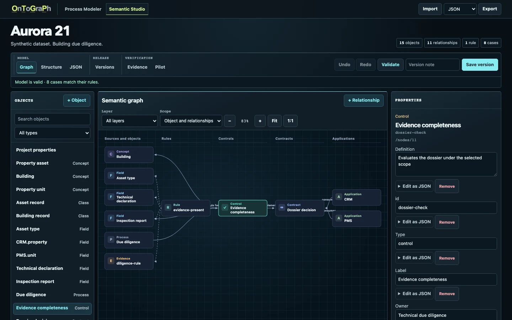
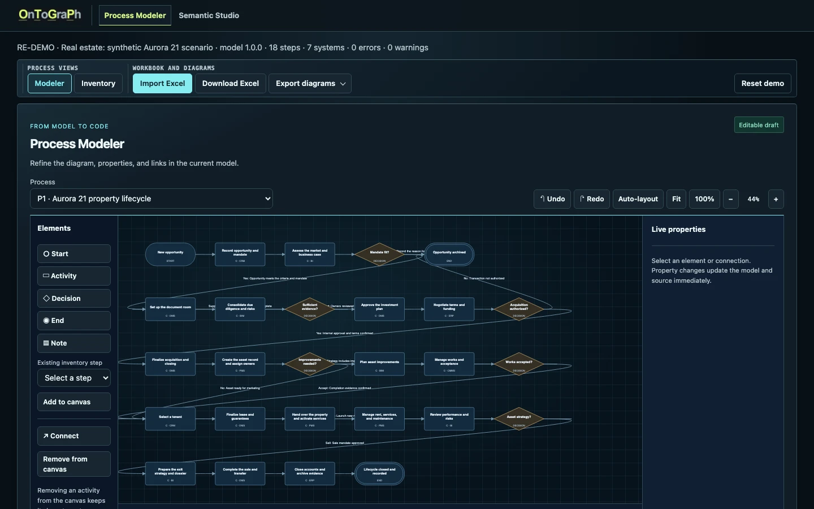

Operational Ontology
Dictionaries and taxonomies define what data means. The graph links those definitions to processes, controls, and applications. Rules specify when and how each definition applies.
Ontology-driven governance for AI and agents
Connect what data means to the rules people, applications, and AI agents use to make decisions. After a change goes live, run cases that distinguish the new rule from the previous one and check how each application responds.

Dictionaries and taxonomies define what data means. The graph links those definitions to processes, controls, and applications. Rules specify when and how each definition applies.
Inspect individual properties, including nested values, in the visual editor or in JSON. Follow the path from source evidence to a changed rule and see which applications depend on it.
Record the application's release receipt and an independent observation of its behavior. After a withdrawal, check whether each application has stopped applying the rule.
OnToGraPh Studio
Run OnToGraPh as a standalone Studio for dictionaries, taxonomies, ontology classes, typed relationships, fields, and versioned controls.

In the local Studio, open Evidence to compare delivery, receipts, and observations. Use Paired Pilot to assess OnToGraPh and your current stack on the same cases.
Run locally from the repository python3 -m ontograph studio
Aurora 21 · Synthetic case
A real estate dossier now requires an additional document. The CRM and property management system (PMS) both report loading the release. Given a test case without the document, the PMS still makes the decision required by the previous rule.
Use this quadrant to shortlist tools by the job you need done and the evidence you need after a change.
OnToGraPh assessment · Selected documented workflows ·
Rows show the verification scope of the documented workflows. Assess production maturity separately.
Consumer behavior after release · Focused workflow
OnToGraPhVerify downstream decisions and confirm the effect of withdrawal.
Offline reference · synthetic caseConsumer behavior after release · Dedicated semantic tooling
Combined-stack pilotKeep a dedicated semantic platform and pilot a separate layer for behavioral verification.
Model and platform checks · Dedicated semantic tooling
Scope of semantic tooling
Blue Ocean hypothesis
Start with a data governance, AI governance or operational risk team that owns a shared control across two applications with different owners. Keep the existing catalog, graph engine and delivery pipeline in place.
See the governance hubOther platforms also support weights. OnToGraPh binds a dependency’s criticality, confidence, source and assessor to a reviewed release. Teams can require completed assessments across a designated decision scope before publication. Try the month-end close example.
Run the existing process and OnToGraPh on the same rule, exception and two applications. Include an old decision behind a matching receipt and an unreachable application during withdrawal. Bind every observation to the exact application instance and activation. Any false confirmation of withdrawal fails the pilot. Measure detection time, time to verify withdrawal, evidence coverage and steward and integration hours, especially for the second adapter. Continue if the pilot surfaces a material divergence the current process misses or produces equivalent evidence at measurably lower cost.
Pilot economics and decision criteriaKeep Git/CI and your catalog if they already tie an approved release to observed decisions and verified withdrawal by application. A second governance layer adds adapter maintenance, ownership and evidence custody.
Reconsider after a paired test on real application instances. Use the same release and cases in both stacks. Require auditable evidence, then compare stale-decision detection, false withdrawal confirmations and reviewer time.
Counterargument from Inkling 2 Mini Uncensored in LM Studio, edited for clarity
The hub is one reference use of OnToGraPh’s reusable ontology layer. PALO Framework sets the governance mandate, PolicyWatcher detects source changes, and OnToGraPh is a spin-off of both that serves as the hub’s shared engine for semantic change and verification.
Top-down governance
Set the mandate, assign who can decide, define review gates, and review evidence on the case.
Bottom-up evidence
Detect a change, preserve the source and versions, and supply evidence for human review and follow-up.
Semantic change and verification
Connect a source change to the affected control, approved release, and decision observed in each application.
Open a PALO case and set its review criteria. Model the change in OnToGraPh and return release and observation records to the same case for PALO review.
Import a PolicyWatcher evidence packet into OnToGraPh for human review. Use the exported findings in the same PALO case and for follow-up in PolicyWatcher.
In the November 2026 pilot, PolicyWatcher supplied a public change through a read-only interface. OnToGraPh bound its source to a versioned rule. PALO’s local Assessment Path reopened Measure and Prove for a human reviewer. A separate calibration laboratory ran offline with its own dictionary. Explore the pilot evidence.
Read the Governance Hub guideThe public repository includes the reference engine, visual tools, and everything needed to reproduce Aurora 21 locally.